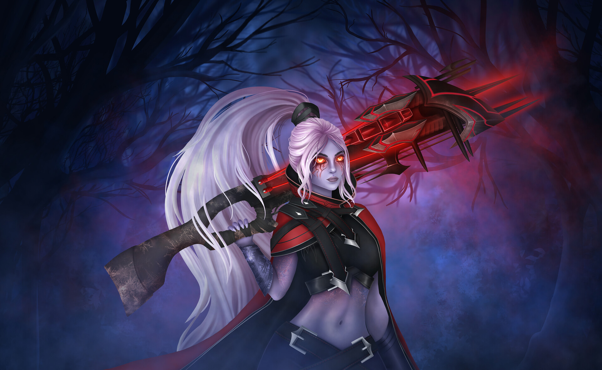

Я стану киберспортсменом?

Её назвали Траксекс — и такое имя отлично подходит представи
телю низкорослой, троллеподобной, не располагающей к себе расы дроу. Но Траксекс не из
них. На караван её родителей-путешественников устроили засаду разбойники, и шумное убийство
невинных навлекло гнев тихого народа дроу.
Сразив головорезов, заступники заметили маленьку
ю девочку, прячущуюся за обломками телег, и решили не бросать её на произвол судьбы. Уже ребён
ком Траксекс показывала черты, что ценились у дроу: скрытность, безмолвность, ловкость. Душой
, если не телом, она будто была подкидышем дроу, вернувшимся в отеческий дом.
Но время шло, д
евочка росла, всё больше возвышаясь над остальными, и чувствовала себя уродиной.
Неудивительно:
черты её лица были гладкими и симметричными, лишёнными бородавок и жестких усов.
Покинув приютив
шее её племя, она ушла в лес одиночкой. Заплутавшие странники, нашедшие выход из чащобы, иногда
рассказывают о невероятно красивой девушке, наблюдавшей за ними из гущи леса и исчезнувшей как н
аваждение прежде, чем они могли приблизиться.
Ловкая и скрытная, обжигающая как лёд,
она двигается, словно туман в тишине. Ты услышишь лишь шёпот её стрел, находящих вражеские сердца.